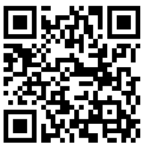

Placez l'appareil à plat sur la surface
La plupart des ordinateurs ne disposent pas des capteurs requis. Scannez le code QR pour continuer sur votre appareil mobile.

Comment utiliser cet inclinomètre en ligne pour mesurer les angles
Cet inclinomètre en ligne est une application Web conçue pour mesurer les angles de surface (pente, tangage et roulis) avec une grande précision, en utilisant les capteurs déjà intégrés à votre smartphone ou tablette. Il transforme gratuitement votre appareil en un niveau à bulle numérique puissant, un niveau à bulle ou un clinomètre, sans nécessiter aucune installation de logiciel. Tout fonctionne directement dans votre navigateur Web, ce qui facilite la mesure des angles et des pentes n'importe où. Utilisez-le comme un outil fiable pour mesurer un angle, mesurer une pente ou vérifier le tangage et le roulis.
Fonctionnalité de base
- Mesure d'angle en temps réel : Une fois que vous avez autorisé l'accès aux capteurs et appuyé sur Démarrer, l'application lit les données de l'accéléromètre et du gyroscope de votre appareil pour calculer le tangage (axe X) et le roulis (axe Y) en temps réel. Cela fournit une mesure instantanée de l'angle et de la pente.
- Niveau à bulle de haute précision : L'interface graphique centrale présente une bulle virtuelle qui se déplace en fonction de l'inclinaison de l'appareil, fournissant un guide visuel intuitif pour atteindre un niveau parfait. C'est un inclinomètre gratuit dans votre navigateur.
- Calibrage à zéro : Le bouton Zéro vous permet de définir n'importe quelle surface comme point de référence (0 degré). Ceci est utile pour mesurer l'angle d'une surface par rapport à une autre, plutôt qu'au niveau absolu. Une fonctionnalité parfaite pour n'importe quel outil d'angle dans le navigateur. Je peux également l'utiliser pour ajuster les bosses de vos appareils mobiles comme les appareils photo en saillie.
- Nivellement sans visibilité : Activez le retour audio dans les paramètres, et votre appareil émettra un bip lorsqu'un niveau parfait sera atteint, vous permettant de niveler les surfaces sans surveiller constamment l'écran.
Avis de non-responsabilité : Comprendre la précision
Veuillez noter que bien que cet outil offre un moyen pratique de mesurer la pente, les capteurs d'un smartphone classique ne sont pas conçus pour une mesure d'angle de qualité métrologique. Des facteurs tels que la qualité du capteur, le calibrage de l'appareil et même de petites bosses sur le boîtier de votre téléphone peuvent introduire des erreurs. Pour de nombreuses tâches de bricolage et de loisirs, la précision est plus que suffisante. Cependant, pour les applications professionnelles nécessitant une précision certifiée, un niveau à bulle calibré et dédié est recommandé. Cet outil fournit une mesure d'angle fiable pour la plupart des besoins quotidiens.
Comment améliorer la précision des mesures
Vous pouvez améliorer considérablement la précision de votre mesure de pente et compenser le biais du capteur en utilisant une méthode de calibrage simple en deux étapes. Ce processus annule efficacement la plupart de l'erreur de décalage de zéro inhérente au téléphone lorsque vous devez mesurer un angle avec une meilleure précision.
- Première mesure : Placez votre téléphone sur la surface que vous souhaitez mesurer et notez la lecture de l'angle (par ex. 8°).
- Deuxième mesure : Sans le soulever, faites pivoter votre téléphone de 180° exactement au même endroit (de sorte qu'il soit « tête-bêche » par rapport à sa position d'origine) et prenez une deuxième lecture (par ex. 10°).
- Calculez l'angle réel : L'angle réel est la moyenne de ces deux mesures. Par exemple : (8 + 10) / 2 = 9°. C'est votre pente la plus précise dans le navigateur.
Utilisez la méthode de rotation à 180° pour annuler les erreurs de capteur et obtenir des mesures d'angle plus précises.
Comment effectuer le calibrage « Zéro »
Le calibrage à zéro vous permet de définir votre surface actuelle comme nouveau point de référence (0 degré), ce qui est essentiel pour mesurer des angles relatifs ou compenser des surfaces inégales. Voici comment procéder :
- Placer l'appareil : Posez fermement votre smartphone ou votre tablette sur la surface que vous souhaitez désigner comme référence à 0°.
- Stabiliser : Assurez-vous que votre appareil est stable et ne bouge pas.
- Appuyez sur Zéro pour calibrer : Appuyez sur le bouton Zéro de l'interface de l'inclinomètre.
- Nouvelle ligne de base : Les lectures actuelles de tangage et de roulis seront instantanément remises à 0°, établissant cette orientation comme votre nouvelle ligne de base pour toutes les mesures ultérieures.
Le calibrage à zéro définit la surface actuelle comme référence à 0°, permettant des mesures d'angle relatives.
Ajustement pour les appareils photo en saillie
Les smartphones modernes ont souvent des bosses d'appareil photo qui les empêchent de reposer parfaitement à plat. Cela peut interférer avec des mesures précises, mais vous pouvez facilement le corriger en utilisant le bouton Zéro, comme illustré ci-dessous.
- Placer et observer : Positionnez votre téléphone sur la surface. Remarquez que la bosse de l'appareil photo crée une légère inclinaison stable, affichant une lecture non nulle.
- Appuyez sur Zéro : Appuyez sur le bouton Zéro. Cela indique à l'inclinomètre de traiter la position inclinée actuelle du téléphone comme le nouveau point de référence « 0° ».
- Mesurer avec précision : L'affichage indiquera maintenant 0°. L'effet de la bosse de l'appareil photo est annulé, vous permettant de prendre des mesures précises par rapport à la surface.
Utilisez "Zéro" pour compenser l'inclinaison causée par une bosse de l'appareil photo.
Cas d'utilisation détaillés de notre inclinomètre
Cet inclinomètre basé sur un navigateur est un outil polyvalent pour mesurer le tangage et le roulis pour de nombreuses tâches :
- Construction et menuiserie : Utilisez ce clinomètre pour vous assurer que les murs sont parfaitement verticaux et les sols de niveau. Lors de la charpente d'un toit, mesurez la pente pour vous assurer que les chevrons sont coupés et installés au bon angle. Il est également idéal pour définir la bonne pente pour le drainage des patios ou des allées.
- Installation de panneaux solaires : Pour maximiser la production d'énergie, les panneaux solaires doivent être réglés à un angle d'inclinaison optimal en fonction de la latitude et de la saison. Utilisez cet outil pour mesurer le tangage avec précision lors de l'installation, en vous assurant que vos panneaux ont la bonne orientation par rapport au soleil pour une efficacité maximale.
- Bricolage et amélioration de l'habitat : Accrochez des cadres photo parfaitement droits à chaque fois. Lors de l'assemblage de meubles ou de l'installation d'armoires de cuisine, utilisez l'inclinomètre pour vous assurer que tout est de niveau. C'est également l'outil idéal pour mesurer la pente lors de l'installation d'appareils électroménagers comme les machines à laver pour éviter le déséquilibre et les vibrations.
- Photographie et vidéographie : Évitez les horizons inclinés en utilisant cet outil pour niveler votre appareil photo sur un trépied. Ceci est particulièrement essentiel pour la photographie de paysage, d'architecture et panoramique où les lignes droites sont essentielles pour un résultat professionnel.
- Nivellement de véhicules et de camping-cars : Vérifiez les angles de la transmission après avoir modifié la suspension d'un véhicule. En camping, utilisez-le pour niveler votre caravane ou votre camping-car pour plus de confort et pour vous assurer que les appareils (comme les réfrigérateurs) fonctionnent correctement. C'est un outil de mesure de pente pratique pour toute configuration de véhicule.
- Plomberie et drainage : Lors de l'installation de tuyaux de drainage, une pente douce et constante est cruciale pour un bon écoulement. Utilisez cet inclinomètre en ligne pour mesurer l'angle avec précision et éviter les problèmes de blocages ou d'eau stagnante à l'avenir.
Foire aux questions
Autorisez l'accès aux capteurs, appuyez sur Démarrer la mesure et placez votre appareil sur la surface. L'inclinomètre affichera les angles de tangage (axe X) et de roulis (axe Y) en temps réel. Utilisez le bouton Zéro pour définir un point de référence.
La précision dépend de la qualité de l'accéléromètre de votre appareil. Pour les tâches de bricolage et de loisirs, elle est très précise. Pour une précision de niveau métrologique professionnel, un niveau à bulle calibré dédié est recommandé. Utilisez la méthode de calibrage par rotation à 180° pour une meilleure précision.
Oui, toutes les données des capteurs sont traitées directement sur votre appareil dans votre navigateur. Aucune information n'est envoyée à nos serveurs. Vos mesures sont entièrement privées.
Vous pouvez l'utiliser pour l'installation de panneaux solaires, la construction, la menuiserie, les projets de bricolage, la photographie, le nivellement de véhicules, la plomberie et toute tâche nécessitant une mesure d'angle ou de pente.
Placez votre téléphone sur la surface avec le relief de l'appareil photo, notez la lecture, puis appuyez sur le bouton Zéro. Cela calibre l'effet du relief de l'appareil photo, permettant des mesures précises.
100% privé et sécurisé
Nous nous engageons à respecter votre vie privée. Toutes les données des capteurs sont traitées directement sur votre appareil par le navigateur. Aucune information n'est jamais envoyée à nos serveurs. Vos mesures sont les vôtres.